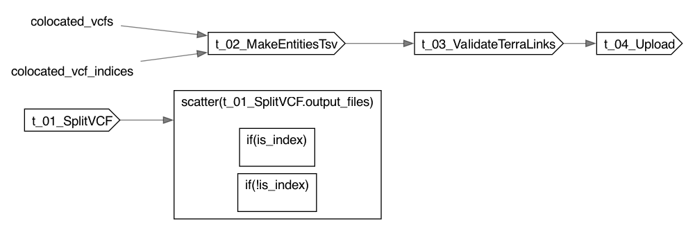

SplitMultiSampleVCFToTerraTable
SplitMultiSampleVCFToTerraTable
- description
- Split a joint-called multi-sample VCF into per-sample VCFs, assemble a Terra entity TSV (one row per sample) pointing at those VCFs, and upload it into a destination data table. By default the table and any missing columns are created on upload.
- author
- Jonn Smith
Inputs
Required
destination_table(String, required): Name of the destination Terra data table to write the per-sample rows into. Expected to follow '[TEST_]joint_results_singlesample'. Also drives auto-derivation of joint_run_table/truth_table (unless those are given): joint_run_table is this name without the trailing '_singlesample' (TEST preserved), and truth_table is 'truth_ '. input_vcf(File, required): Joint-called multi-sample VCF file (can be compressed or uncompressed).joint_run_ID(String, required): Entity name of the joint-call run that produced input_vcf; every row's 97_Joint_Run_ID column links to it.
Optional
input_vcf_index(File?): Index file for the input VCF (required if VCF is compressed).joint_run_table(String?): Optional. Entity type (data table) that joint_run_ID lives in. When omitted, derived as 'TEST_joint_results_'. Existence of this table (and the joint_run_ID entity in it) is verified before upload. namespace(String?): Optional Terra namespace of the destination workspace (auto-detected when omitted).sample_name_list(File?): Optional file of sample names to extract, one per line. Mutually exclusive with sample_names.sample_names(Array[String]?): Optional list of sample names to extract. If provided, every name must occur in input_vcf; the workflow fails when any is missing. Mutually exclusive with sample_name_list.truth_table(String?): Optional. Truth-set entity type (data table). When omitted, derived as 'truth_'. Existence of this table (and each linked truth entity) is verified before upload. Each row's Truth column links to the truth entity named by the sample prefix (row ID up to the first underscore). workspace(String?): Optional Terra workspace name (auto-detected when omitted).t_01_SplitVCF.runtime_attr_override(RuntimeAttr?)t_02_MakeEntitiesTsv.runtime_attr_override(RuntimeAttr?)t_03_ValidateTerraLinks.runtime_attr_override(RuntimeAttr?)t_04_Upload.runtime_attr_override(RuntimeAttr?)
Defaults
columns_must_exist(Boolean, default=false): When true, every column must already exist in destination_table before upload. Default false (columns may be created).disk_space_multiplier(Int, default=4): Multiplier applied to the input VCF size when sizing the split task's disk (optional; default: 4).require_existing_id(Boolean, default=false): When true, every sample ID must already exist in destination_table before upload. Default false (rows may be created).
Outputs
sample_vcfs(Array[File])sample_vcf_indices(Array[File])entities_tsv(File)validation_log(File)upload_log(File)
Dot Diagram
